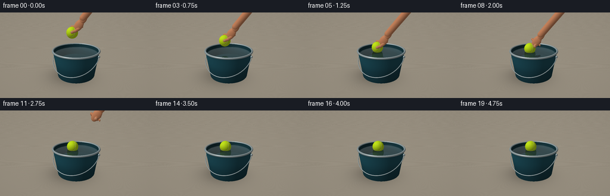
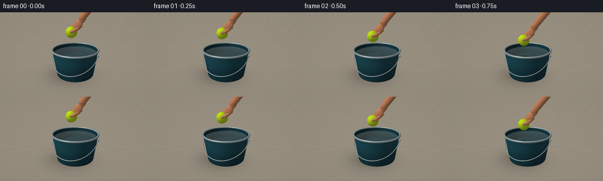
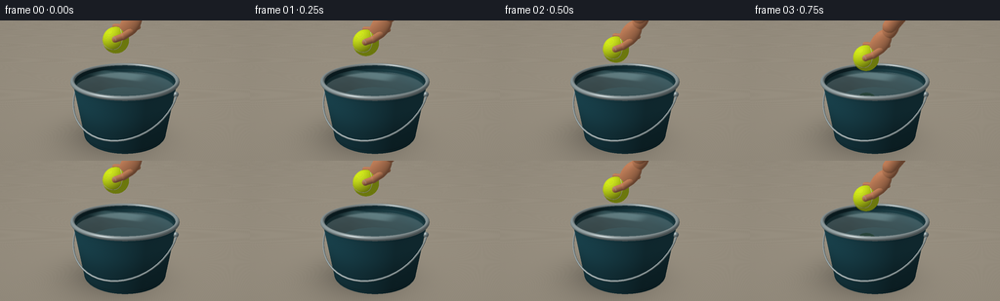
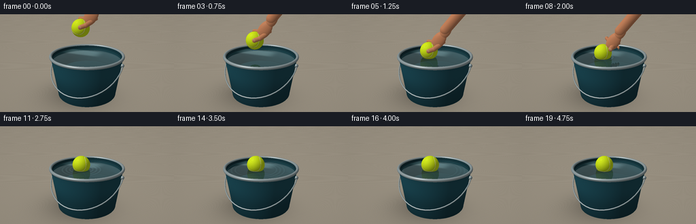

CODING AGENTS AS PIXEL WORLD MODELS
traex/GPT-6.1-Sol · phygen_008
点击播放 · 原生 RGB 像素
逐轮保存的候选
回放视频、检查图与代码变化。
每份候选均可单独播放。实际图片检查记录在下方工具轨迹中。
候选 01播放与检查图
点击播放 · 原生 RGB 像素


展开代码变化
--- 上一保存版本
+++ 本次保存版本
@@ -0,0 +1,291 @@
+"""A small, self-contained analytic renderer for the requested RGB sequence."""
+from pathlib import Path
+import math
+import numpy as np
+from PIL import Image
+import artifact_io
+
+ROOT=Path(__file__).resolve().parent
+W,H=256,144
+SS=3
+rng=np.random.default_rng(8)
+
+def unit(v):
+ return v/np.maximum(np.linalg.norm(v,axis=-1,keepdims=True),1e-9)
+
+def smooth(a):
+ a=np.clip(a,0,1); return a*a*(3-2*a)
+
+CAM=np.array([3.3,4.9,8.4],np.float32)
+TARGET=np.array([0,1.52,0],np.float32)
+F=unit(TARGET-CAM); R=unit(np.cross(F,[0,1,0])); U=np.cross(R,F)
+LIGHT=unit(np.array([-3.5,7,4.5],np.float32))
+water_y=1.79
+ball_r=.395
+
+class Scene:
+ def __init__(self,t):
+ self.t=t
+ descend=smooth(t/1.5)
+ self.bc=np.array([-.27+.07*smooth((t-1.65)/3), 3.12-(3.12-2.013)*descend,.06],np.float32)
+ if t>1.5:
+ self.bc[1]+= .034*np.sin((t-1.5)*8)*np.exp(-(t-1.5)*1.25)
+ self.shapes=[]
+ self.sphere(self.bc,ball_r,5)
+ # Plastic bucket's sturdy lower foot and steel side pivots.
+ for a in [0,np.pi]:
+ p=np.array([1.62*np.cos(a),1.62,1.62*np.sin(a)],np.float32)
+ self.sphere(p,.085,3)
+ # The thin bail handle hangs naturally around the bucket's front.
+ pts=[]
+ for a in np.linspace(0,np.pi,27):
+ pts.append(np.array([1.65*np.cos(a),1.60-1.01*np.sin(a),1.60*np.sin(a)],np.float32))
+ for a,b in zip(pts[:-1],pts[1:]):self.capsule(a,b,.026,3)
+ self.hand(t)
+ def sphere(self,c,r,m):self.shapes.append(('ell',np.asarray(c,np.float32),np.array([r,r,r],np.float32),np.eye(3,dtype=np.float32),m))
+ def ell(self,c,r,m,axis=None):
+ if axis is None: rot=np.eye(3,dtype=np.float32)
+ else:
+ y=unit(np.array(axis,np.float32)); x=unit(np.cross(y,[0,0,1])); z=np.cross(x,y);rot=np.stack([x,y,z],axis=1).astype(np.float32)
+ self.shapes.append(('ell',np.asarray(c,np.float32),np.asarray(r,np.float32),rot,m))
+ def capsule(self,a,b,r,m):self.shapes.append(('cap',np.array(a,np.float32),np.array(b,np.float32),r,m))
+ def hand(self,t):
+ # A relaxed right hand: thumb in front, four fingers behind the ball.
+ withdraw=smooth((t-1.90)/1.05)
+ if withdraw>=1:return
+ opening=smooth((t-1.50)/.52)
+ c=self.bc+np.array([1.25*withdraw,1.85*withdraw,-.08*withdraw])
+ palm=c+np.array([.43,.49,-.09])
+ axis=[.68,1,-.2]
+ self.ell(palm,[.275,.44,.16],6,axis)
+ wrist=palm+np.array([.28,.39,-.08])
+ self.ell(wrist,[.215,.34,.17],6,axis)
+ self.capsule(wrist+np.array([-.01,.08,0]),wrist+np.array([1.75,2.28,-.30]),.225,6)
+ # Index through little finger lie along the back curvature of the tennis ball.
+ for k in range(4):
+ base=palm+np.array([-.17+.118*k,-.11,-.12-.025*k])
+ knuckle=c+np.array([-.12+.13*k,.37-.055*k,-.22-.018*k])+np.array([.13*opening,.18*opening,-.13*opening])
+ mid=c+np.array([-.21+.13*k,.17-.05*k,-.34-.006*k])+np.array([.26*opening,.20*opening,-.14*opening])
+ tip=c+np.array([-.18+.127*k,-.012-.035*k,-.32])+np.array([.36*opening,.26*opening,-.10*opening])
+ rad=.071-.005*k
+ self.capsule(base,knuckle,rad*1.13,6)
+ self.capsule(knuckle,mid,rad,6)
+ self.capsule(mid,tip,rad*.92,6)
+ self.ell(tip,[rad*.77,.086,rad*.67],6)
+ base=palm+np.array([.04,-.21,.105])
+ middle=c+np.array([.33,.17,.23])+np.array([.18*opening,.17*opening,.10*opening])
+ tip=c+np.array([.13,.095,.345])+np.array([.38*opening,.21*opening,.12*opening])
+ self.capsule(base,middle,.104,6)
+ self.capsule(middle,tip,.094,6)
+ # Thumbnail is a slightly flattened, warm translucent oval.
+ self.ell(tip+np.array([.007,.026,.074]),[.057,.073,.014],7,[-.65,.76,0])
+
+ def hit(self,O,D,objects=True,water=True,table=True):
+ n=len(D); best=np.full(n,np.inf,np.float32); norms=np.zeros((n,3),np.float32); mats=np.full(n,-1,np.int16)
+ def put(ts,ns,mat,valid=None):
+ good=(ts>0.0008)&(ts<best)&np.isfinite(ts)
+ if valid is not None:good &=valid
+ best[good]=ts[good];norms[good]=ns[good];mats[good]=mat
+ if table:
+ ts=(-.025-O[:,1])/np.where(abs(D[:,1])>1e-8,D[:,1],1e-8)
+ put(ts,np.broadcast_to([0,1,0],(n,3)),0)
+ # Conical bucket shell, slightly wider at its top.
+ for inner in [False,True]:
+ slope=.145; intercept=1.335-(.065 if inner else 0)
+ r0=intercept+slope*O[:,1]
+ aa=D[:,0]**2+D[:,2]**2-(slope*D[:,1])**2
+ bb=2*(O[:,0]*D[:,0]+O[:,2]*D[:,2]-r0*slope*D[:,1])
+ cc=O[:,0]**2+O[:,2]**2-r0*r0
+ disc=bb*bb-4*aa*cc
+ sq=np.sqrt(np.maximum(disc,0))
+ for sign in [-1,1]:
+ ts=(-bb+sign*sq)/(2*aa+1e-15)
+ p=O+D*ts[:,None]
+ ns=unit(np.stack([p[:,0],-slope*(intercept+slope*p[:,1]),p[:,2]],1))
+ if inner:ns=-ns
+ put(ts,ns,2 if inner else 1,(disc>=0)&(p[:,1]>.045)&(p[:,1]<1.91))
+ # Solid interior bottom, visible through the clear water.
+ ts=(.075-O[:,1])/(D[:,1]+1e-15);p=O+D*ts[:,None]
+ put(ts,np.broadcast_to([0,1,0],(n,3)),2,(p[:,0]**2+p[:,2]**2<1.35**2))
+ # Rounded lip is an analytic torus evaluated by conservative sphere tracing.
+ tc=np.array([0,1.905,0],np.float32); ro=O-tc
+ bd=np.sum(ro*D,axis=1); cc=np.sum(ro*ro,axis=1)-1.72**2; disc=bd*bd-cc
+ start=np.maximum(-bd-np.sqrt(np.maximum(disc,0)),.001)
+ limit=-bd+np.sqrt(np.maximum(disc,0))
+ active=(disc>=0)&(limit>start)&(start<best)
+ ids=np.where(active)[0];tr=start[ids].copy()
+ for _ in range(43):
+ if not len(ids):break
+ p=ro[ids]+D[ids]*tr[:,None]; rr=np.sqrt(p[:,0]**2+p[:,2]**2)
+ q=np.stack([rr-1.615,p[:,1]],1); dist=np.sqrt(np.sum(q*q,axis=1))-.063
+ done=dist<.0006
+ if np.any(done):
+ ix=ids[done];tt=tr[done]; pp=p[done];rs=rr[done]
+ nn=unit(np.stack([pp[:,0]*(1-1.615/rs),pp[:,1],pp[:,2]*(1-1.615/rs)],1))
+ gd=(tt<best[ix]);ix2=ix[gd];best[ix2]=tt[gd];norms[ix2]=nn[gd];mats[ix2]=3
+ tr+=np.maximum(dist,.00035)
+ keep=(~done)&(tr<limit[ids])&(tr<best[ids]);ids=ids[keep];tr=tr[keep]
+ if water:
+ ts=(water_y-O[:,1])/(D[:,1]+1e-15);p=O+D*ts[:,None]
+ rr=np.sqrt((p[:,0]-self.bc[0])**2+(p[:,2]-self.bc[2])**2)
+ elapsed=max(0,self.t-1.46)
+ wave=np.zeros(n,np.float32)
+ if elapsed>0:
+ for k in range(3):
+ radius=.15+.55*elapsed-.17*k
+ if radius>0:
+ d=rr-radius
+ wave+=.028*np.exp(-elapsed*.6)*np.exp(-(d/.11)**2)*np.cos(d*31)
+ ripplex=wave*(p[:,0]-self.bc[0])/(rr+.001)
+ ripplez=wave*(p[:,2]-self.bc[2])/(rr+.001)
+ # Subtle ambient capillary undulation.
+ ripplex+=.002*np.sin(p[:,0]*13+p[:,2]*8+self.t*.6)
+ ripplez+=.002*np.cos(p[:,2]*15-p[:,0]*9+self.t*.5)
+ ns=unit(np.stack([-ripplex,np.ones(n),-ripplez],1))
+ put(ts,ns,4,(p[:,0]**2+p[:,2]**2<(1.595)**2))
+ if objects:
+ for typ,a,b,c,m in self.shapes:
+ if typ=='ell':
+ oo=(O-a)@c/b;dd=D@c/b
+ aa=np.sum(dd*dd,1);bb=np.sum(oo*dd,1);cc=np.sum(oo*oo,1)-1;di=bb*bb-aa*cc
+ ts=(-bb-np.sqrt(np.maximum(di,0)))/aa
+ p=O+D*ts[:,None]
+ ns=unit((((p-a)@c)/(b*b))@c.T)
+ put(ts,ns,m,di>=0)
+ else:
+ ba=b-a;oa=O-a; baba=np.dot(ba,ba);bard=D@ba;baoa=oa@ba
+ aa=baba-bard*bard;bb=baba*np.sum(oa*D,1)-baoa*bard;cc=baba*np.sum(oa*oa,1)-baoa*baoa-c*c*baba
+ di=bb*bb-aa*cc;ts=(-bb-np.sqrt(np.maximum(di,0)))/(aa+1e-20);y=baoa+ts*bard
+ p=O+D*ts[:,None];ns=unit(p-a-(y/baba)[:,None]*ba)
+ put(ts,ns,m,(di>=0)&(y>0)&(y<baba))
+ for cp in [a,b]:
+ oc=O-cp;bb2=np.sum(oc*D,1);di2=bb2**2-np.sum(oc*oc,1)+c*c
+ ts2=-bb2-np.sqrt(np.maximum(di2,0));ns2=unit(O+D*ts2[:,None]-cp)
+ put(ts2,ns2,m,di2>=0)
+ return best,norms,mats
+
+ def environment(self,D):
+ sky=np.clip(D[:,1]*.8+.55,0,1)
+ col=np.array([.54,.57,.52])[None,:]*(1-sky[:,None])+np.array([.88,.91,.93])[None,:]*sky[:,None]
+ # A large diffuse window to the left of camera.
+ glow=np.maximum(0,D@unit(np.array([-1,2,3])))**15
+ col+=glow[:,None]*.21
+ return col.astype(np.float32)
+
+ def shade(self,O,D,T,N,M,secondary=False):
+ P=O+D*np.where(np.isfinite(T),T,0)[:,None]
+ C=self.environment(D)
+ nd=np.maximum(N@LIGHT,0);view=np.maximum(-np.sum(N*D,1),0)
+ half=unit(LIGHT-D);spe=np.maximum(np.sum(N*half,1),0)
+ noise=np.sin(P[:,0]*173.4+P[:,1]*237.7+P[:,2]*197.1)*np.sin(P[:,0]*387.1-P[:,2]*229.1)
+ for mat in [0,1,2,3,5,6,7]:
+ ix=np.where(M==mat)[0]
+ if not len(ix):continue
+ p=P[ix];n=N[ix];dif=nd[ix];sp=spe[ix];vw=view[ix]
+ if mat==0:
+ # Warm limestone countertop, fine stone texture and a soft bucket shadow.
+ grain=np.sin(p[:,0]*87+p[:,2]*51)*np.sin(p[:,2]*97-p[:,0]*31)
+ tex=.018*grain+.009*noise[ix]
+ base=np.array([.62,.58,.51])[None,:]+tex[:,None]
+ projx=p[:,0]+.38;projz=p[:,2]-.22
+ sh=1-.33*np.exp(-((projx/1.57)**2+(projz/1.48)**2)*1.15)
+ shade=(.50+.49*dif)*sh
+ val=base*shade[:,None]+.015*sp[:,None]**40
+ elif mat in [1,2]:
+ base=np.tile([.095,.29,.345] if mat==1 else [.065,.20,.235],(len(ix),1))
+ # Low-gloss painted metal, with narrow highlights following its round profile.
+ base+=.005*noise[ix,None]
+ vertical=.96+.04*np.cos(p[:,1]*5)
+ ao=np.clip((p[:,1]-.1)*.21+.68,.68,1)
+ if mat==2:ao=np.clip(.66+.3*(p[:,1]/1.9),.65,1)
+ val=base*(.42+.60*dif)[:,None]*vertical[:,None]*ao[:,None]+(.12*sp**42+.024*sp**7)[:,None]
+ # Moulded horizontal bands near the base and immediately beneath the lip.
+ band=np.exp(-((p[:,1]-.145)/.024)**2)+.5*np.exp(-((p[:,1]-1.78)/.018)**2)
+ val*=1-.11*band[:,None]
+ elif mat==3:
+ base=np.tile([.50,.56,.57],(len(ix),1))
+ val=base*(.46+.49*dif)[:,None]+(.47*sp**80+.12*sp**8)[:,None]
+ val+=.04*np.sin(p[:,1]*260)[:,None]
+ elif mat==5:
+ q=(p-self.bc)/ball_r
+ # The characteristic recessed white curved tennis seam on felt.
+ # Rotate into the ball's material coordinates, with a gentle floating turn.
+ angle=.25+.055*max(0,self.t-1.5)
+ rot=np.array([[np.cos(angle),0,np.sin(angle)],[0,1,0],[-np.sin(angle),0,np.cos(angle)]])
+ q=q@rot
+ ca,sa=np.cos(.65),np.sin(.65);qx=q[:,0]*ca+q[:,1]*sa;qy=-q[:,0]*sa+q[:,1]*ca;qz=q[:,2]
+ func=qy-.68*(qx*qx-qz*qz)
+ grad=np.sqrt(1+1.85*(qx*qx+qz*qz))
+ dist=np.abs(func)/grad
+ seam=1-smooth((dist-.019)/.013)
+ edge=1-smooth((dist-.033)/.013)
+ base=np.tile([.68,.82,.055],(len(ix),1))
+ fuzz=.025*noise[ix]+.01*np.sin(p[:,0]*641-p[:,1]*599+p[:,2]*447)
+ base+=fuzz[:,None]
+ base*=1-.12*edge[:,None]
+ base=base*(1-seam[:,None])+np.array([.87,.89,.64])[None,:]*seam[:,None]
+ val=base*(.49+.57*dif)[:,None]+(.025*sp**9)[:,None]
+ # Natural ambient darkening right at the meniscus, not a cast hard stripe.
+ ao=1-.16*np.exp(-np.maximum(p[:,1]-water_y,0)/.055)
+ val*=ao[:,None]
+ elif mat==6:
+ base=np.tile([.70,.43,.285],(len(ix),1))
+ base+=.008*noise[ix,None]
+ wrap=np.maximum(0,(n@LIGHT+.24)/1.24)
+ val=base*(.49+.57*wrap)[:,None]+np.array([.09,.054,.028])[None,:]*(1-vw[:,None])*.3
+ val+=(.035*sp**26)[:,None]
+ else:
+ val=np.array([.78,.57,.44])[None,:]*(.55+.48*dif)[:,None]+.08*sp[:,None]**35
+ C[ix]=val
+ ix=np.where(M==4)[0]
+ if len(ix):
+ p=P[ix];d=D[ix];normal=N[ix];v=view[ix]
+ refl=d-2*np.sum(d*normal,1)[:,None]*normal
+ rt,rn,rm=self.hit(p+normal*.002,refl,water=False)
+ rc=self.shade(p+normal*.002,refl,rt,rn,rm,True)
+ # Snell's law; beneath the surface the small immersed cap remains visible.
+ eta=1/1.333;cosi=-np.sum(d*normal,1);k=1-eta*eta*(1-cosi*cosi)
+ refr=unit(eta*d+(eta*cosi-np.sqrt(np.maximum(k,0)))[:,None]*normal)
+ tt,tn,tm=self.hit(p-normal*.002,refr,water=False)
+ trans=self.shade(p-normal*.002,refr,tt,tn,tm,True)
+ depth=np.maximum(tt,0)
+ attenuation=np.exp(-depth[:,None]*np.array([.22,.09,.07])[None,:])
+ trans=trans*attenuation+np.array([.095,.23,.245])[None,:]*(1-attenuation)
+ fres=.025+.975*(1-v)**5
+ # Soft window reflection gives the still water its broad glassy sheen.
+ col=trans*(1-fres[:,None])+rc*fres[:,None]
+ col+=.055*np.maximum(refl@unit(np.array([-1,4,3])),0)[:,None]**18
+ col+=(.31*spe[ix]**240)[:,None]
+ # The delicate bright meniscus encircles the floating ball.
+ radial=np.sqrt((p[:,0]-self.bc[0])**2+(p[:,2]-self.bc[2])**2)
+ cross=np.sqrt(max(0,ball_r**2-(self.bc[1]-water_y)**2))
+ if self.t>=1.5:col+=np.exp(-((radial-cross-.005)/.012)**2)[:,None]*np.array([.055,.065,.023])
+ C[ix]=col
+ return C
+
+def render(t):
+ hh,ww=H*SS,W*SS
+ yy,xx=np.mgrid[:hh,:ww].astype(np.float32)
+ fov=np.tan(np.deg2rad(35)/2)
+ sx=(2*(xx+.5)/ww-1)*ww/hh*fov;sy=(1-2*(yy+.5)/hh)*fov
+ dirs=unit(F+sx[:,:,None]*R+sy[:,:,None]*U).reshape(-1,3).astype(np.float32)
+ orig=np.broadcast_to(CAM,dirs.shape)
+ sc=Scene(t)
+ T,N,M=sc.hit(orig,dirs)
+ C=sc.shade(orig,dirs,T,N,M)
+ # Gentle photographic tone curve and vignette; retain yellow felt and water details.
+ C=np.clip(C,0,1)
+ C=C**(1/1.15)
+ vignette=1-.085*((xx/ww-.5)**2+(yy/hh-.5)**2)
+ C=C.reshape(hh,ww,3)*vignette[:,:,None]
+ img=Image.fromarray(np.uint8(np.clip(C*255+.5,0,255)))
+ return np.array(img.resize((W,H),Image.Resampling.LANCZOS))
+
+if __name__=='__main__':
+ import time
+ start=time.time();frames=[]
+ for i in range(20):
+ frames.append(render(i/4))
+ print(f'frame {i:02d} {time.time()-start:.1f}s',flush=True)
+ artifact_io.save(np.stack(frames),ROOT)
+ print('Saved required RGB artifacts.',flush=True)
候选 02播放与检查图
点击播放 · 原生 RGB 像素


展开代码变化
--- 上一保存版本
+++ 本次保存版本
@@ -219,11 +219,11 @@
dist=np.abs(func)/grad
seam=1-smooth((dist-.019)/.013)
edge=1-smooth((dist-.033)/.013)
- base=np.tile([.68,.82,.055],(len(ix),1))
+ base=np.tile([.76,.86,.065],(len(ix),1))
fuzz=.025*noise[ix]+.01*np.sin(p[:,0]*641-p[:,1]*599+p[:,2]*447)
base+=fuzz[:,None]
base*=1-.12*edge[:,None]
- base=base*(1-seam[:,None])+np.array([.87,.89,.64])[None,:]*seam[:,None]
+ base=base*(1-seam[:,None])+np.array([.94,.94,.77])[None,:]*seam[:,None]
val=base*(.49+.57*dif)[:,None]+(.025*sp**9)[:,None]
# Natural ambient darkening right at the meniscus, not a cast hard stripe.
ao=1-.16*np.exp(-np.maximum(p[:,1]-water_y,0)/.055)
@@ -254,6 +254,20 @@
fres=.025+.975*(1-v)**5
# Soft window reflection gives the still water its broad glassy sheen.
col=trans*(1-fres[:,None])+rc*fres[:,None]
+ # Broad, soft rectangular skylight reflected over the far side of the water.
+ window=np.exp(-((p[:,0]+.48)/.86)**6-((p[:,2]+.63)/.37)**6)
+ col+=window[:,None]*np.array([.115,.145,.145])[None,:]
+ col+=np.array([.018,.038,.040])[None,:]
+ elapsed=max(0,self.t-1.46)
+ if elapsed>0:
+ rad=np.sqrt((p[:,0]-self.bc[0])**2+(p[:,2]-self.bc[2])**2)
+ wav=np.zeros(len(ix))
+ for j in range(3):
+ radius=.15+.55*elapsed-.17*j
+ if radius>0:
+ delta=rad-radius
+ wav+=np.exp(-(delta/.065)**2)*np.cos(delta*39)
+ col+=wav[:,None]*np.exp(-elapsed*.55)*np.array([.05,.073,.078])[None,:]
col+=.055*np.maximum(refl@unit(np.array([-1,4,3])),0)[:,None]**18
col+=(.31*spe[ix]**240)[:,None]
# The delicate bright meniscus encircles the floating ball.
@@ -266,7 +280,7 @@
def render(t):
hh,ww=H*SS,W*SS
yy,xx=np.mgrid[:hh,:ww].astype(np.float32)
- fov=np.tan(np.deg2rad(35)/2)
+ fov=np.tan(np.deg2rad(26)/2)
sx=(2*(xx+.5)/ww-1)*ww/hh*fov;sy=(1-2*(yy+.5)/hh)*fov
dirs=unit(F+sx[:,:,None]*R+sy[:,:,None]*U).reshape(-1,3).astype(np.float32)
orig=np.broadcast_to(CAM,dirs.shape)
可观测工具轨迹
实际执行的命令与返回图片。
命令 1exit 0
/bin/bash -lc 'ls -la && cat prompt.txt && cat GENERATION_RULES.md && cat task_spec.json'
命令 2exit 0
/bin/bash -lc "cat artifact_io.py && python - <<'PY'
import numpy,PIL
print('ready')
PY"命令 3exit 0
/bin/bash -lc "cat > generate.py <<'PY'
\"\"\"A small, self-contained analytic renderer for the requested RGB sequence.\"\"\"
from pathlib import Path
import math
import numpy as np
from PIL import Image
import artifact_io
ROOT=Path(__file__).resolve().parent
W,H=256,144
SS=3
rng=np.random.default_rng(8)
def unit(v):
return v/np.maximum(np.linalg.norm(v,axis=-1,keepdims=True),1e-9)
def smooth(a):
a=np.clip(a,0,1); return a*a*(3-2*a)
CAM=np.array([3.3,4.9,8.4],np.float32)
TARGET=np.array([0,1.52,0],np.float32)
F=unit(TARGET-CAM); R=unit(np.cross(F,[0,1,0])); U=np.cross(R,F)
LIGHT=unit(np.array([-3.5,7,4.5],np.float32))
water_y=1.79
ball_r=.395
class Scene:
def __init__(self,t):
self.t=t
descend=smooth(t/1.5)
self.bc=np.array([-.27+.07*smooth((t-1.65)/3), 3.12-(3.12-2.013)*descend,.06],np.float32)
if t>1.5:
self.bc[1]+= .034*np.sin((t-1.5)*8)*np.exp(-(t-1.5)*1.25)
self.shapes=[]
self.sphere(self.bc,ball_r,5)
# Plastic bucket's sturdy lower foot and steel side pivots.
for a in [0,np.pi]:
p=np.array([1.62*np.cos(a),1.62,1.62*np.sin(a)],np.float32)
self.sphere(p,.085,3)
# The thin bail handle hangs naturally around the bucket's front.
pts=[]
for a in np.linspace(0,np.pi,27):
pts.append(np.array([1.65*np.cos(a),1.60-1.01*np.sin(a),1.60*np.sin(a)],np.float32))
for a,b in zip(pts[:-1],pts[1:]):self.capsule(a,b,.026,3)
self.hand(t)
def sphere(self,c,r,m):self.shapes.append(('ell',np.asarray(c,np.float32),np.array([r,r,r],np.float32),np.eye(3,dtype=np.float32),m))
def ell(self,c,r,m,axis=None):
if axis is None: rot=np.eye(3,dtype=np.float32)
else:
y=unit(np.array(axis,np.float32)); x=unit(np.cross(y,[0,0,1])); z=np.cross(x,y);rot=np.stack([x,y,z],axis=1).astype(np.float32)
self.shapes.append(('ell',np.asarray(c,np.float32),np.asarray(r,np.float32),rot,m))
def capsule(self,a,b,r,m):self.shapes.append(('cap',np.array(a,np.float32),np.array(b,np.float32),r,m))
def hand(self,t):
# A relaxed right hand: thumb in front, four fingers behind the ball.
withdraw=smooth((t-1.90)/1.05)
if withdraw>=1:return
opening=smooth((t-1.50)/.52)
c=self.bc+np.array([1.25*withdraw,1.85*withdraw,-.08*withdraw])
palm=c+np.array([.43,.49,-.09])
axis=[.68,1,-.2]
self.ell(palm,[.275,.44,.16],6,axis)
wrist=palm+np.array([.28,.39,-.08])
self.ell(wrist,[.215,.34,.17],6,axis)
self.capsule(wrist+np.array([-.01,.08,0]),wrist+np.array([1.75,2.28,-.30]),.225,6)
# Index through little finger lie along the back curvature of the tennis ball.
for k in range(4):
base=palm+np.array([-.17+.118*k,-.11,-.12-.025*k])
knuckle=c+np.array([-.12+.13*k,.37-.055*k,-.22-.018*k])+np.array([.13*opening,.18*opening,-.13*opening])
mid=c+np.array([-.21+.13*k,.17-.05*k,-.34-.006*k])+np.array([.26*opening,.20*opening,-.14*opening])
tip=c+np.array([-.18+.127*k,-.012-.035*k,-.32])+np.array([.36*opening,.26*opening,-.10*opening])
rad=.071-.005*k
self.capsule(base,knuckle,rad*1.13,6)
self.capsule(knuckle,mid,rad,6)
self.capsule(mid,tip,rad*.92,6)
self.ell(tip,[rad*.77,.086,rad*.67],6)
base=palm+np.array([.04,-.21,.105])
middle=c+np.array([.33,.17,.23])+np.array([.18*opening,.17*opening,.10*opening])
tip=c+np.array([.13,.095,.345])+np.array([.38*opening,.21*opening,.12*opening])
self.capsule(base,middle,.104,6)
self.capsule(middle,tip,.094,6)
# Thumbnail is a slightly flattened, warm translucent oval.
self.ell(tip+np.array([.007,.026,.074]),[.057,.073,.014],7,[-.65,.76,0])
def hit(self,O,D,objects=True,water=True,table=True):
n=len(D); best=np.full(n,np.inf,np.float32); norms=np.zeros((n,3),np.float32); mats=np.full(n,-1,np.int16)
def put(ts,ns,mat,valid=None):
good=(ts>0.0008)&(ts<best)&np.isfinite(ts)
if valid is not None:good &=valid
best[good]=ts[good];norms[good]=ns[good];mats[good]=mat
if table:
ts=(-.025-O[:,1])/np.where(abs(D[:,1])>1e-8,D[:,1],1e-8)
put(ts,np.broadcast_to([0,1,0],(n,3)),0)
# Conical bucket shell, slightly wider at its top.
for inner in [False,True]:
slope=.145; intercept=1.335-(.065 if inner else 0)
r0=intercept+slope*O[:,1]
aa=D[:,0]**2+D[:,2]**2-(slope*D[:,1])**2
bb=2*(O[:,0]*D[:,0]+O[:,2]*D[:,2]-r0*slope*D[:,1])
cc=O[:,0]**2+O[:,2]**2-r0*r0
disc=bb*bb-4*aa*cc
sq=np.sqrt(np.maximum(disc,0))
for sign in [-1,1]:
ts=(-bb+sign*sq)/(2*aa+1e-15)
p=O+D*ts[:,None]
ns=unit(np.stack([p[:,0],-slope*(intercept+slope*p[:,1]),p[:,2]],1))
if inner:ns=-ns
put(ts,ns,2 if inner else 1,(disc>=0)&(p[:,1]>.045)&(p[:,1]<1.91))
# Solid interior bottom, visible through the clear water.
ts=(.075-O[:,1])/(D[:,1]+1e-15);p=O+D*ts[:,None]
put(ts,np.broadcast_to([0,1,0],(n,3)),2,(p[:,0]**2+p[:,2]**2<1.35**2))
# Rounded lip is an analytic torus evaluated by conservative sphere tracing.
tc=np.array([0,1.905,0],np.float32); ro=O-tc
bd=np.sum(ro*D,axis=1); cc=np.sum(ro*ro,axis=1)-1.72**2; disc=bd*bd-cc
start=np.maximum(-bd-np.sqrt(np.maximum(disc,0)),.001)
limit=-bd+np.sqrt(np.maximum(disc,0))
active=(disc>=0)&(limit>start)&(start<best)
ids=np.where(active)[0];tr=start[ids].copy()
for _ in range(43):
if not len(ids):break
p=ro[ids]+D[ids]*tr[:,None]; rr=np.sqrt(p[:,0]**2+p[:,2]**2)
q=np.stack([rr-1.615,p[:,1]],1); dist=np.sqrt(np.sum(q*q,axis=1))-.063
done=dist<.0006
if np.any(done):
ix=ids[done];tt=tr[done]; pp=p[done];rs=rr[done]
nn=unit(np.stack([pp[:,0]*(1-1.615/rs),pp[:,1],pp[:,2]*(1-1.615/rs)],1))
gd=(tt<best[ix]);ix2=ix[gd];best[ix2]=tt[gd];norms[ix2]=nn[gd];mats[ix2]=3
tr+=np.maximum(dist,.00035)
keep=(~done)&(tr<limit[ids])&(tr<best[ids]);ids=ids[keep];tr=tr[keep]
if water:
ts=(water_y-O[:,1])/(D[:,1]+1e-15);p=O+D*ts[:,None]
rr=np.sqrt((p[:,0]-self.bc[0])**2+(p[:,2]-self.bc[2])**2)
elapsed=max(0,self.t-1.46)
wave=np.zeros(n,np.float32)
if elapsed>0:
for k in range(3):
radius=.15+.55*elapsed-.17*k
if radius>0:
d=rr-radius
wave+=.028*np.exp(-elapsed*.6)*np.exp(-(d/.11)**2)*np.cos(d*31)
ripplex=wave*(p[:,0]-self.bc[0])/(rr+.001)
ripplez=wave*(p[:,2]-self.bc[2])/(rr+.001)
# Subtle ambient capillary undulation.
ripplex+=.002*np.sin(p[:,0]*13+p[:,2]*8+self.t*.6)
ripplez+=.002*np.cos(p[:,2]*15-p[:,0]*9+self.t*.5)
ns=unit(np.stack([-ripplex,np.ones(n),-ripplez],1))
put(ts,ns,4,(p[:,0]**2+p[:,2]**2<(1.595)**2))
if objects:
for typ,a,b,c,m in self.shapes:
if typ=='ell':
oo=(O-a)@c/b;dd=D@c/b
aa=np.sum(dd*dd,1);bb=np.sum(oo*dd,1);cc=np.sum(oo*oo,1)-1;di=bb*bb-aa*cc
ts=(-bb-np.sqrt(np.maximum(di,0)))/aa
p=O+D*ts[:,None]
ns=unit((((p-a)@c)/(b*b))@c.T)
put(ts,ns,m,di>=0)
else:
ba=b-a;oa=O-a; baba=np.dot(ba,ba);bard=D@ba;baoa=oa@ba
aa=baba-bard*bard;bb=baba*np.sum(oa*D,1)-baoa*bard;cc=baba*np.sum(oa*oa,1)-baoa*baoa-c*c*baba
di=bb*bb-aa*cc;ts=(-bb-np.sqrt(np.maximum(di,0)))/(aa+1e-20);y=baoa+ts*bard
p=O+D*ts[:,None];ns=unit(p-a-(y/baba)[:,None]*ba)
put(ts,ns,m,(di>=0)&(y>0)&(y<baba))
for cp in [a,b]:
oc=O-cp;bb2=np.sum(oc*D,1);di2=bb2**2-np.sum(oc*oc,1)+c*c
ts2=-bb2-np.sqrt(np.maximum(di2,0));ns2=unit(O+D*ts2[:,None]-cp)
put(ts2,ns2,m,di2>=0)
return best,norms,mats
def environment(self,D):
sky=np.clip(D[:,1]*.8+.55,0,1)
col=np.array([.54,.57,.52])[None,:]*(1-sky[:,None])+np.array([.88,.91,.93])[None,:]*sky[:,None]
# A large diffuse window to the left of camera.
glow=np.maximum(0,D@unit(np.array([-1,2,3])))**15
col+=glow[:,None]*.21
return col.astype(np.float32)
def shade(self,O,D,T,N,M,secondary=False):
P=O+D*np.where(np.isfinite(T),T,0)[:,None]
C=self.environment(D)
nd=np.maximum(N@LIGHT,0);view=np.maximum(-np.sum(N*D,1),0)
half=unit(LIGHT-D);spe=np.maximum(np.sum(N*half,1),0)
noise=np.sin(P[:,0]*173.4+P[:,1]*237.7+P[:,2]*197.1)*np.sin(P[:,0]*387.1-P[:,2]*229.1)
for mat in [0,1,2,3,5,6,7]:
ix=np.where(M==mat)[0]
if not len(ix):continue
p=P[ix];n=N[ix];dif=nd[ix];sp=spe[ix];vw=view[ix]
if mat==0:
# Warm limestone countertop, fine stone texture and a soft bucket shadow.
grain=np.sin(p[:,0]*87+p[:,2]*51)*np.sin(p[:,2]*97-p[:,0]*31)
tex=.018*grain+.009*noise[ix]
base=np.array([.62,.58,.51])[None,:]+tex[:,None]
projx=p[:,0]+.38;projz=p[:,2]-.22
sh=1-.33*np.exp(-((projx/1.57)**2+(projz/1.48)**2)*1.15)
shade=(.50+.49*dif)*sh
val=base*shade[:,None]+.015*sp[:,None]**40
elif mat in [1,2]:
base=np.tile([.095,.29,.345] if mat==1 else [.065,.20,.235],(len(ix),1))
# Low-gloss painted metal, with narrow highlights following its round profile.
base+=.005*noise[ix,None]
vertical=.96+.04*np.cos(p[:,1]*5)
ao=np.clip((p[:,1]-.1)*.21+.68,.68,1)
if mat==2:ao=np.clip(.66+.3*(p[:,1]/1.9),.65,1)
val=base*(.42+.60*dif)[:,None]*vertical[:,None]*ao[:,None]+(.12*sp**42+.024*sp**7)[:,None]
# Moulded horizontal bands near the base and immediately beneath the lip.
band=np.exp(-((p[:,1]-.145)/.024)**2)+.5*np.exp(-((p[:,1]-1.78)/.018)**2)
val*=1-.11*band[:,None]
elif mat==3:
base=np.tile([.50,.56,.57],(len(ix),1))
val=base*(.46+.49*dif)[:,None]+(.47*sp**80+.12*sp**8)[:,None]
val+=.04*np.sin(p[:,1]*260)[:,None]
elif mat==5:
q=(p-self.bc)/ball_r
# The characteristic recessed white curved tennis seam on felt.
# Rotate into the ball's material coordinates, with a gentle floating turn.
angle=.25+.055*max(0,self.t-1.5)
rot=np.array([[np.cos(angle),0,np.sin(angle)],[0,1,0],[-np.sin(angle),0,np.cos(angle)]])
q=q@rot
ca,sa=np.cos(.65),np.sin(.65);qx=q[:,0]*ca+q[:,1]*sa;qy=-q[:,0]*sa+q[:,1]*ca;qz=q[:,2]
func=qy-.68*(qx*qx-qz*qz)
grad=np.sqrt(1+1.85*(qx*qx+qz*qz))
dist=np.abs(func)/grad
seam=1-smooth((dist-.019)/.013)
edge=1-smooth((dist-.033)/.013)
base=np.tile([.68,.82,.055],(len(ix),1))
fuzz=.025*noise[ix]+.01*np.sin(p[:,0]*641-p[:,1]*599+p[:,2]*447)
base+=fuzz[:,None]
base*=1-.12*edge[:,None]
base=base*(1-seam[:,None])+np.array([.87,.89,.64])[None,:]*seam[:,None]
val=base*(.49+.57*dif)[:,None]+(.025*sp**9)[:,None]
# Natural ambient darkening right at the meniscus, not a cast hard stripe.
ao=1-.16*np.exp(-np.maximum(p[:,1]-water_y,0)/.055)
val*=ao[:,None]
elif mat==6:
base=np.tile([.70,.43,.285],(len(ix),1))
base+=.008*noise[ix,None]
wrap=np.maximum(0,(n@LIGHT+.24)/1.24)
val=base*(.49+.57*wrap)[:,None]+np.array([.09,.054,.028])[None,:]*(1-vw[:,None])*.3
val+=(.035*sp**26)[:,None]
else:
val=np.array([.78,.57,.44])[None,:]*(.55+.48*dif)[:,None]+.08*sp[:,None]**35
C[ix]=val
ix=np.where(M==4)[0]
if len(ix):
p=P[ix];d=D[ix];normal=N[ix];v=view[ix]
refl=d-2*np.sum(d*normal,1)[:,None]*normal
rt,rn,rm=self.hit(p+normal*.002,refl,water=False)
rc=self.shade(p+normal*.002,refl,rt,rn,rm,True)
# Snell's law; beneath the surface the small immersed cap remains visible.
eta=1/1.333;cosi=-np.sum(d*normal,1);k=1-eta*eta*(1-cosi*cosi)
refr=unit(eta*d+(eta*cosi-np.sqrt(np.maximum(k,0)))[:,None]*normal)
tt,tn,tm=self.hit(p-normal*.002,refr,water=False)
trans=self.shade(p-normal*.002,refr,tt,tn,tm,True)
depth=np.maximum(tt,0)
attenuation=np.exp(-depth[:,None]*np.array([.22,.09,.07])[None,:])
trans=trans*attenuation+np.array([.095,.23,.245])[None,:]*(1-attenuation)
fres=.025+.975*(1-v)**5
# Soft window reflection gives the still water its broad glassy sheen.
col=trans*(1-fres[:,None])+rc*fres[:,None]
col+=.055*np.maximum(refl@unit(np.array([-1,4,3])),0)[:,None]**18
col+=(.31*spe[ix]**240)[:,None]
# The delicate bright meniscus encircles the floating ball.
radial=np.sqrt((p[:,0]-self.bc[0])**2+(p[:,2]-self.bc[2])**2)
cross=np.sqrt(max(0,ball_r**2-(self.bc[1]-water_y)**2))
if self.t>=1.5:col+=np.exp(-((radial-cross-.005)/.012)**2)[:,None]*np.array([.055,.065,.023])
C[ix]=col
return C
def render(t):
hh,ww=H*SS,W*SS
yy,xx=np.mgrid[:hh,:ww].astype(np.float32)
fov=np.tan(np.deg2rad(35)/2)
sx=(2*(xx+.5)/ww-1)*ww/hh*fov;sy=(1-2*(yy+.5)/hh)*fov
dirs=unit(F+sx[:,:,None]*R+sy[:,:,None]*U).reshape(-1,3).astype(np.float32)
orig=np.broadcast_to(CAM,dirs.shape)
sc=Scene(t)
T,N,M=sc.hit(orig,dirs)
C=sc.shade(orig,dirs,T,N,M)
# Gentle photographic tone curve and vignette; retain yellow felt and water details.
C=np.clip(C,0,1)
C=C**(1/1.15)
vignette=1-.085*((xx/ww-.5)**2+(yy/hh-.5)**2)
C=C.reshape(hh,ww,3)*vignette[:,:,None]
img=Image.fromarray(np.uint8(np.clip(C*255+.5,0,255)))
return np.array(img.resize((W,H),Image.Resampling.LANCZOS))
if __name__=='__main__':
import time
start=time.time();frames=[]
for i in range(20):
frames.append(render(i/4))
print(f'frame {i:02d} {time.time()-start:.1f}s',flush=True)
artifact_io.save(np.stack(frames),ROOT)
print('Saved required RGB artifacts.',flush=True)
PY
OPENBLAS_NUM_THREADS=1 python generate.py"命令 4exit 0
/bin/bash -lc "python - <<'PY'
p='generate.py'
s=open(p).read().replace('np.deg2rad(35)','np.deg2rad(26)')
s=s.replace(\"base=np.tile([.68,.82,.055]\", \"base=np.tile([.76,.86,.065]\")
s=s.replace(\"np.array([.87,.89,.64])\", \"np.array([.94,.94,.77])\")
s=s.replace(\"col=trans*(1-fres[:,None])+rc*fres[:,None]\", \"\"\"col=trans*(1-fres[:,None])+rc*fres[:,None]
# Broad, soft rectangular skylight reflected over the far side of the water.
window=np.exp(-((p[:,0]+.48)/.86)**6-((p[:,2]+.63)/.37)**6)
col+=window[:,None]*np.array([.115,.145,.145])[None,:]
col+=np.array([.018,.038,.040])[None,:]
elapsed=max(0,self.t-1.46)
if elapsed>0:
rad=np.sqrt((p[:,0]-self.bc[0])**2+(p[:,2]-self.bc[2])**2)
wav=np.zeros(len(ix))
for j in range(3):
radius=.15+.55*elapsed-.17*j
if radius>0:
delta=rad-radius
wav+=np.exp(-(delta/.065)**2)*np.cos(delta*39)
col+=wav[:,None]*np.exp(-elapsed*.55)*np.array([.05,.073,.078])[None,:]\"\"\")
open(p,'w').write(s)
PY
OPENBLAS_NUM_THREADS=1 python generate.py"命令 5exit 0
/bin/bash -lc "python - <<'PY'
from pathlib import Path
import numpy as np
from PIL import Image
p=Path('.')
a=np.load('pixels.npz')['pixels']
fs=sorted((p/'frames').glob('*.png'))
assert a.shape==(144,256,20)
assert len(fs)==20
assert all(Image.open(f).mode=='RGB' and Image.open(f).size==(256,144) for f in fs)
assert (p/'index.html').exists() and (p/'generate.py').exists()
print('Validated: 20 RGB frames, 256x144; player, pixels, preview, and runnable generator exist.')
PY"视觉工具实际返回图片 1

视觉工具实际返回图片 2

保存候选 2 份；完成命令 5 次；可验证图片返回 2 张。原始 API 响应与完整日志保留在本地。